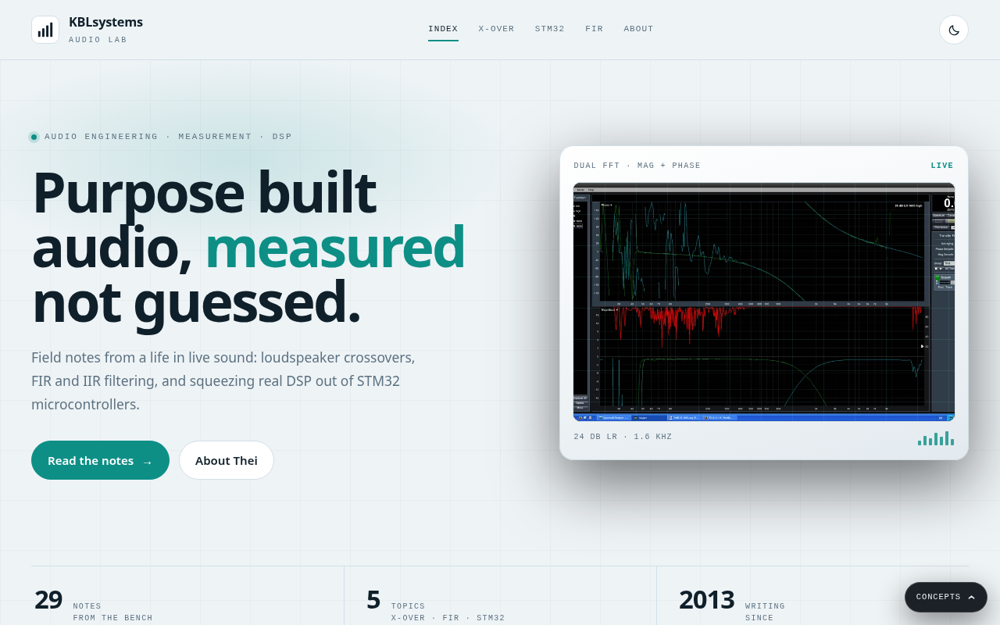

Concept A · chosenThree complete directions for kblsystems.blogspot.com — same posts, same voice, three different design systems. This page is the design comparison; the chosen direction is built out in full at the site root.
The blog currently runs Blogger’s Awesome Inc. theme: 29 posts, one about page, label navigation, a social embed and advertising. These examples strip the old wrapper and rebuild the reading experience around the content.
Each concept is a working mini-site with an index, an article and an about page. Search, label filtering, a dark-mode toggle and an image lightbox are shared; the look, grid and typography change.
file://Open the full site at ../index.html, or start a local server from the repository root:
python3 -m http.server 8000
Then visit http://localhost:8000/. A server is recommended so relative image paths and the responsive srcset behave exactly as they would when deployed.